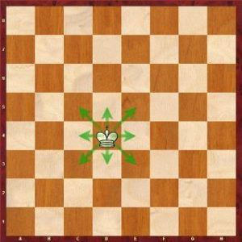
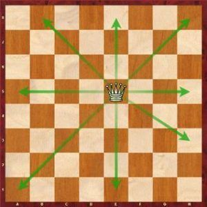
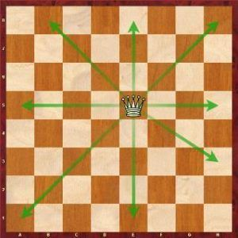
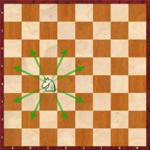
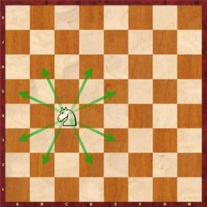
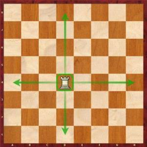
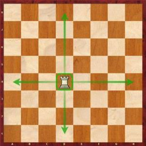
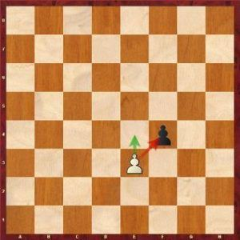
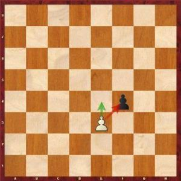

El Rey
Es la pieza más importante del juego, ya que sin él, se acaba la partida, además de ser la única pieza que no tiene un valor específico.

El rey solamente se puede mover una casilla por turno y en cualquier dirección:
La Dama
Es la pieza más fuerte de todo el juego, pues esta se puede mover en cualquier dirección siempre y cuando otra pieza no intervenga en su camino. Tiene un valor de nueve (9) puntos.
 

El Alfil
El alfil es la pieza que se encuentra a los costados del rey y la dama, este se mueve solamente de forma diagonal. Tiene un valor de tres (3) puntos.
El Caballo
El caballo es muy seguramente la pieza con el movimiento más raro, formando una L en el tablero. Para realizar el movimiento hay que moverse dos casilleros de manera horizontal o vertical, y el último salto, si ya diste los dos pasos de manera horizontal, deberás elegir si moverte uno más hacia arriba o hacia abajo, si los dos pasos ya los diste de manera vertical, deberás elegir si moverte uno más hacia la izquierda o derecha. Cabe a recalcar que el caballo solo puede capturar a la pieza que se encuentre en el casillero de su último salto, es decir, como el caballo pasa por encima de las piezas, no captura a aquellas que se encuentren en su camino, sino a aquella pieza que se encuentre en el casillero en el que caiga. El caballo tiene un valor de tres (3) puntos.
 

La Torre
La torre es una pieza con una mecánica más sencilla que el caballito, simplemente se mueve de manera horizontal o vertical en una misma línea recta. La torre tiene un valor mayor al del caballo y el alfil, un valor de cinco (5) puntos.
 

El Peón
El peón es la pieza más sencilla de todo el juego, sin embargo, tiene distintas mecánicas, como la manera en la que se mueve y come, el peón solo se puede mover para adelante, pero no puede retroceder, y solamente puede capturar moviendose un casillero de manera diagonal, si la pieza enemiga esta más lejos, el peón tendrá que acercarese a un paso por jugada (de manera vertical y siempre hacia adelante). Su valor es de un (1) punto.
 
